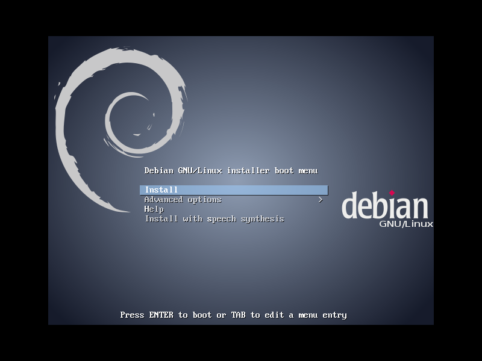
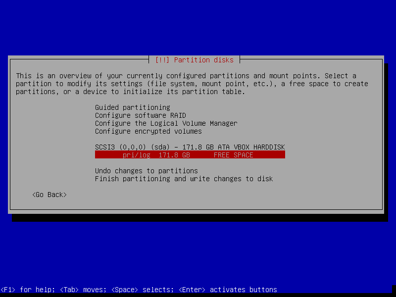
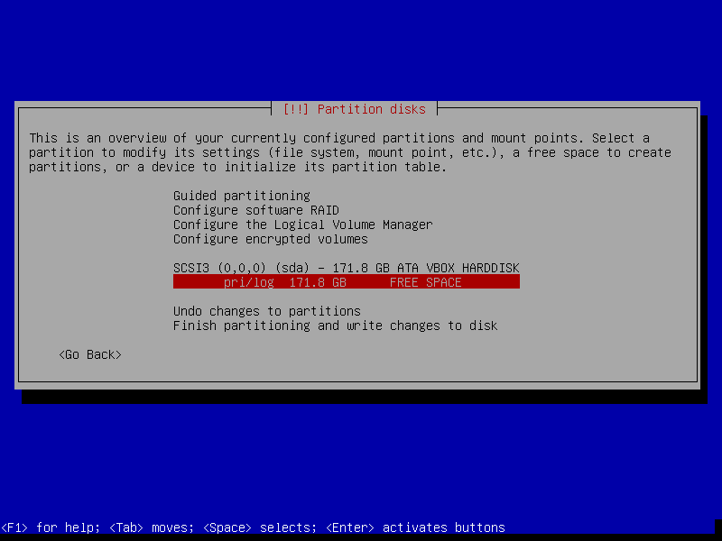
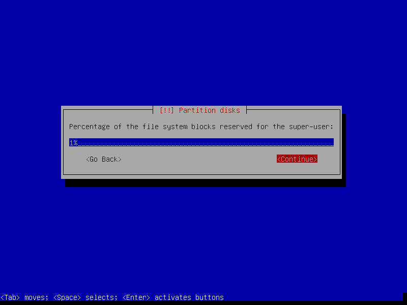
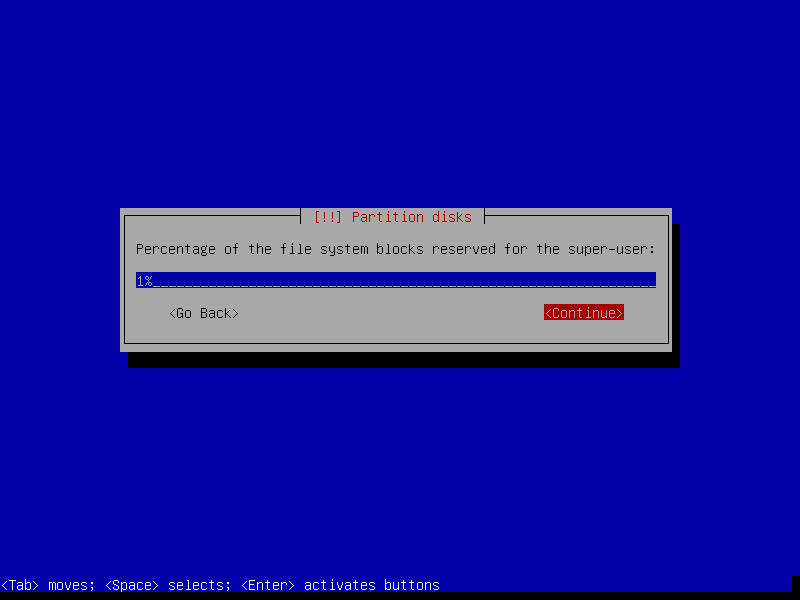
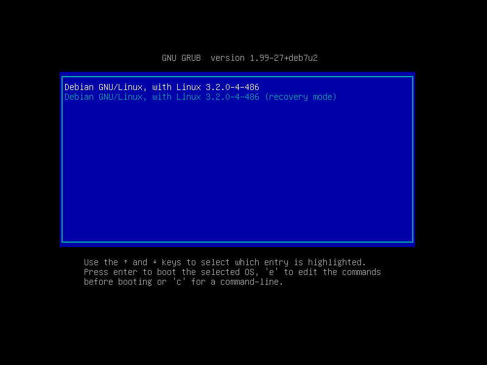
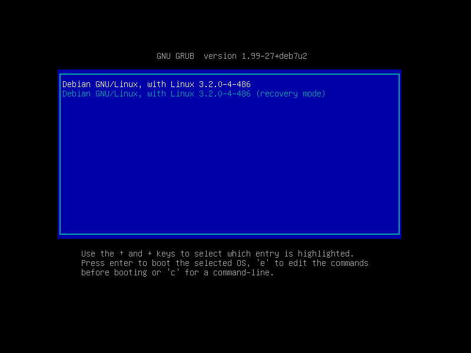

Running your own Linux home server is a fun learning experience and offers several advantages.
It is cheap if you already have a spare machine. Or search for inexpensive, second-hand netbooks now that the short-lived craze for these lightweight devices has well and truly passed. An old netbook or laptop - retired in favour of more current and powerful machines - can still deliver plenty of oomph for running a personal server. Netbooks are frugal with power and come equipped with multiple network interfaces and their own built-in UPS/battery! I have been using an Asus 900HA netbook equipped with 1GM RAM and (user-replaced) 500GB hard drive for the past few years as a 24/7 home server.
A stable Linux distribution can be installed on the device and provide ongoing services such as printing, hosting torrents or websites, and file backups. Debian GNU/Linux is an operating system created by volunteers of one of the largest and longest-running free software projects in the world. More than a hundred other Linux distributions like Ubuntu build their edifices on solid Debian awesomesauce.
There are 3 Debian release branches - stable, testing, and unstable - and the current stable branch goes by the name wheezy. I use the minimal install image to create a lightweight, console-only base configuration that can be customized for various tasks.
Below is a visual walk-through of a sample Debian home server setup that makes use of an entire storage device divided into root + swap + home partitions.
To install:
0. Install image
Download a Debian mini.iso and burn the image to a CD or prepare a USB boot device.
1. Go!



2. Partitions
In the example below I create 3 partitions on the disk:
- sda1 is a 10GB root partition
- sda5 is a 1GB swap partition
- sda6 uses remaining space as a home partition (useful backup location for user files)

 



Setting Mount options to noatime decreases write operations and boosts drive speed.


Reserved blocks can be used by privileged system processes to write to disk - useful if a full filesystem blocks users from writing - and reduce disk fragmentation. On large, non-root partitions extra space can be gained by reducing the 5% reserve set aside by Debian to 1%.
 



3. Install packages and reboot

Select only [*] Standard system utilities if you wish to start with a minimal, console-only base configuration ready for further customization. The task menu can be accessed post-install by running tasksel.

 

4. Static network interface
For a home server that is going to stay put in one location its a good idea to configure the device with a static network interface. Log in as root and run nano /etc/network/interfaces to configure (in this example) the ethernet port with a static address:
# The loopback network interface
auto lo
iface lo inet loopback
# The primary network interface
auto eth0
iface eth0 inet static
address 192.168.1.2
netmask 255.255.255.0
gateway 192.168.1.1 # home router address
5. Post-install
I have created a post-install shell script that can be used to configure tracking of Debian's branches with the option of installing the Openbox window manager or (more suitable for a server setup) sticking with a console-only environment.
Happy hacking!